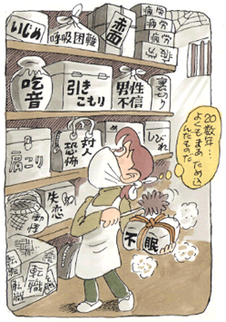

社会恐怖5
森田療法で20数年来の神経症を一年足らずで克服！
（吃音、赤面恐怖、対人恐怖、他）
田島 知子（仮名）32歳・主婦
幸せだった小学生低学年まで
私は宮城県の仙台市で生まれました。弟を1人持つ4人家族の長女として育ちました。幼い頃は、どちらかというと、人見知りする大人しい子供でしたが、住んでいた団地には生まれながらにたくさんの友達がいて、いつも暗くなるまで元気に遊んでいて、幸せな幼少期を過ごしたと思っております。その反面、父が出張の為、留守にする事が多く、母1人が子育てに孤軍奮闘するのを見ていたせいか、お姉ちゃんでしょ！といわれてきたせいか、子供心に母に心配をかけてはいけないという思いがあり、余り我が儘をいわず、手のかからないいわゆる典型的な「良い子」タイプであったと思います。
小学3年の夏に、大阪の枚方市に引越しをしました。大阪の水と空気が合わなかったのか、喘息を発症しましたが、薬を飲まずに我慢をしたら病気が完治する、という医者の言葉を信じて、発作がおきてもじっと我慢する事を続けていくうちに、とうとう病気を克服しました。そんな我慢強い所もありました。また、父が仕事のストレスから、酒に溺れるようになり、酔っては母に手をあげたり、テーブルをひっくりかえすようになりました。そんな時は怖くて、弟と押入れに隠れていました。父がひとしきり暴れた後、母と泣きながら割れたお茶碗を片付けるのは、とても悲しかったです。
小学5年の時に、大阪市内に引越しをして、そのまま地元の中学校に入りました。運動部にあこがれていて、ピアノの先生がつき指をしないクラブを・・という事で、水泳部に入りました。バタ足さえできなかった私が、みるみる泳げるようになり、身体もどんどん丈夫になりました。その年の大阪市の大会では、メドレーリレーで銅メダル・個人でも地区大会で優勝しました。辛い練習でさえ楽しいと思える人生で一番幸福な時を過ごしました。
人間不信から吃音に
そんなある日思いもかけない事がおこりました。あれだけ仲間だと思っていたクラブメートから、突然仲間はずれにあったのです。練習で1人離れて走ったり、試合会場でも1人でポツンといる事は、恥ずかしくもあり、とてもいたたまれないものでした。後から皆に「試合のレギュラーになってから、調子にのっている」といわれ、ただ泣くばかりで何もいいかえせませんでした。また、林間学校で女子の集団が1人の女生徒の服を剥がして笑いものにする、という場面を見てショックを受けました。私の住んでいる地域は、けっして環境がよくなく、母子家庭の子供が多かったせいか、陰湿ないじめが横行していました。筆舌にはつくしがたい、ありとあらゆるいじめを見たり聞いたりしているうち、人を傷つけても平気な人間が世の中にはたくさんいる、という事実を知り、人が怖くなっていきました。それと同時に「そ、それから」「あ、あの・・」というように、言葉がでにくくなるのを意識するようになりました。吃音の始まりでした。クラスでも、人と距離を置くようになりました。高校に入って、友達ができても、いつ裏切られるかもしれない、と人に心を許す事ができなくなり、日頃の緊張の為か、若いのにいつも疲れていて、常に雲の中をさ迷っているような感覚でした。そのまま大人になり、社会人になりました。
吃音の再発。赤面恐怖、不眠、対人恐怖にも悩まされて・・
社会人になって、今までの私の過去を知る人は誰もいない、よしやってやるゾ！とわざと明るいふりをして、仕事も一生懸命こなしました。それが功をそうしてか、一時期・吃音が陰をひそめ、かつての充実感がよみがえってきました。が、ある日、席替えがあり、女性の先輩3人に囲まれて、話の輪に入れてもらえない、細かいミスを指摘されて常に怒鳴られる状態が続き、ストレスでまた吃音が再発し、客先からも、いっている事がよく分からないとクレームが入るようになりました。赤面恐怖にもなって電車にのっても顔をあげられなくなりました。そして上司に「このままだと身体を壊してしまいそうだから辞めた方がいい」といわれて、とうとう会社を退職。唯一のとりえだった我慢強さも失い、私は精神的な指針をすっかりなくしてしまいました。それから、数十社もの転職を繰りかえしました。
仕事に充実感も見出せず、家庭不和からくる男性不信と自信のなさから結婚もできず、気付いたら30歳を超えていました。吃音に、常に呼吸が意識にあがってくる息苦しさ、腕がしびれる程の肩こり、不眠症、自分の人あたりの悪さが人を傷つけているという対人恐怖、もう限界にきていました。ひきこもり寸前の私がとった行動は心療内科の門をたたく事。でも、安定剤を飲んでも、単なる気休めにしかなりませんでした。
森田療法で20数年来の神経症が、一年足らずで回復！

ある日、友達から、森田正馬先生の「入院療法の実績」の本を借りて読み、自分の気持ちをここまで知る人がいた事に衝撃を受けました。早速インターネットで検索「生活の発見会」いう自助団体がある事をしり参加。平成17年の春にはその学習会に参加、自分と同じような悩みを持つ多くの仲間と知り合いました。その仲間の1人から、365日・森田療法を学ぶ事ができる掲示板を紹介してもらい、日記をつけ始めました。Mさん（当財団職員）や集談会（自助グループの会合）の先輩より、森田療法に基づいたアドバイスを常にいただく事ができて、私はどんどん元気になっていきました。ところがその秋に失恋。傷心の私はメンタルヘルス図書室のドアをたたき、直接Mさんに教えを乞いました。そこで「失恋くらいで落ち込まず、もっと大きな視野で物を見なさい」といわれ、さらに「何も分からなくとも、神経症は病気ではない、というを忘れないようにしなさい」と教えていただき、はっとしました。それからは、苦しくとも健康人としての生活を推し進めていき、症状ばかりに注意が向いていたのを、外へ外へと注意を向けていくように心掛けました。またロードサイクルを教えてもらい、みなでツーリングに参加して汗を流したり、会社の通勤でもロードサイクルに乗るようになりました。そして、ある日突然気付いたのです。「ああ、私は病気ではなかったのだと」「自分が敵視していた違和感や不快感は元々、誰もが持っていた正常な感覚だったのだと」
平成18年の元旦には、新しくできた彼にプロポーズを受け、早速結婚式の準備に取り掛かりました。式でピアノを演奏する事が1ヶ月前にきまり、会社から帰ると、毎日3時間はピアノに向かいました。平成18年の9月、無事、結婚式を迎える事ができました。ピアノ演奏も成功。そして何よりMさんをはじめ、集談会の仲間がかけつけてきてくれ、最高の結婚式となりました。
追伸。その年の秋に妊娠しました。平成19年の3月に寿退社。思えば男性不信だった私が結婚できた事もさる事なら、20年来神経症で苦しんだ私が、1年足らずでここまで回復したのは、まるで奇跡のようです。森田療法を通じて支えてくれた方々、Mさん、集談会の仲間との出会いなしでは、なし得なかった事。今は感謝の思いでいっぱいです。本当にありがとうございました。今は、お腹の赤ちゃんに会える日を、指折り数える毎日です。